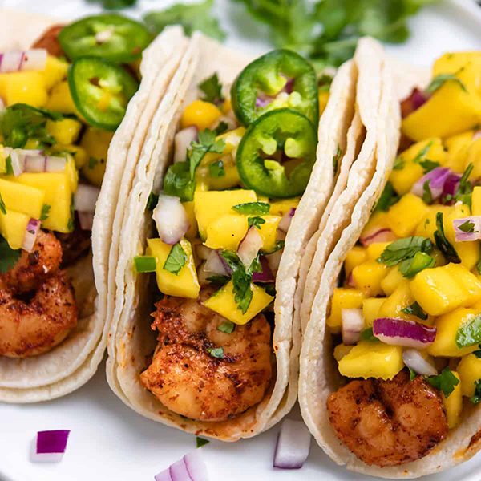

Shrimp Tacos

1 lb. medium shrimp, peeled, deveined
2 tsp. store-bought or homemade taco seasoning
2 large cloves garlic, finely chopped, divided
Kosher salt
2 scallions, green and white parts separated, sliced
1/4 c. sour cream
Directions
Step 1
In a medium bowl, toss shrimp, taco seasoning, half of garlic, and 3/4 teaspoon salt until combined. Set aside until ready to use.
Step 2
In a small bowl, whisk white scallion parts, sour cream, jalapeños, mayonnaise, zest from 1 lime, juice from 1/2 lime, 1/4 teaspoon salt, and remaining garlic until combined. If you desire a smooth sauce, blend in a blender or food processor until smooth, about 15 seconds. Set aside until ready to use.
Step 3
In a large bowl, toss green cabbage, red cabbage, cilantro, green scallion parts, juice from 1/2 lime, and a heavy pinch of salt until combined.
Step 4
In a large stainless steel or cast-iron skillet over medium-high heat, heat 1 tablespoon oil and swirl to coat pan. Once oil is shimmering, add shrimp in a single layer. Cook, turning halfway through, until cooked through and opaque, 2 to 3 minutes. Transfer shrimp to a clean medium bowl.
Step 5
Reduce heat to medium, add juice from remaining 1 lime, and scrape up any browned bits from bottom of pan. Pour lime juice over shrimp. Wipe out skillet with paper towels.
Step 6
In same skillet over medium-high heat, heat 1 tablespoon oil. Toast half of tortillas, turning frequently, until slightly charred on both sides, 3 to 4 minutes. Repeat with remaining 1 tablespoon oil and tortillas.